サーバーワークスエンジニアブログ
https://blog.serverworks.co.jp/
クラウド専業インテグレーター・サーバーワークスの中の人があらゆる技術についてお届けします。
フィード

Amazon Q Developer CLIが変える開発体験：数独ゲーム制作を通じた考察
サーバーワークスエンジニアブログ
Amazon Q Developer CLIを活用した数独ゲームの開発プロジェクト。開発過程の詳細やトラブルシューティング、コーディングエージェントの問題解決能力に焦点を当てた記事です。
31分前

【参加レポート】AWS Summit Japan 2025 〜セッション以外〜
サーバーワークスエンジニアブログ
こんにちは、マネージドサービス部の大城です。 今年も AWS Summit Japan 2025 に参加してきました。当記事ではセッション以外の様子をレポートしたいと思います。 まとめ 2日間では時間が足りない 地方からの参加者は前日入りが良い 体力をつけて望むべき 会場到着まで 沖縄->東京移動 ホテルに荷物を預けてランチ 会場到着 ブース巡り サーバーワークス ブース デロイト トーマツ コンサルティング さんブース トレノケート さんブース New Relic さんブース IBM さんブース セゾンテクノロジー さんブース AWS ビレッジ クラウド運用 ブース 東京->沖縄 帰路 さい…
1時間前

【参加レポート】AWS Summit Japan 2025 〜セッション〜
サーバーワークスエンジニアブログ
こんにちは、マネージドサービス部の大城です。 今年も AWS Summit Japan 2025 に参加してきました。当記事では参加したセッションの要約と感想を書きます。 Amazon Bedrock で作る未来の開発サイクルとオペレーション戦略（CUS-04） 要約 感想 AI によってシステム障害が増える!? ～AI エージェント時代だからこそ必要な、インシデントとの向き合い方～（AP-12） 要約 感想 スペシャルセッションビルダーのための AWS テクノロジー：その深化と進化（SP-01） 要約 ゲストスピーカー：株式会社ドワンゴ ゲストスピーカー：株式会社NTTドコモ ゲストスピーカ…
2時間前

【Amazon Connect】セキュリティプロファイルの運用
サーバーワークスエンジニアブログ
Amazon Connectのセキュリティプロファイルはユーザーごとに複数割り当て可能です。 この仕組みを利用した運用例を検討してみます。 概要 シナリオ 設定 受発信オペレーションのみを行うセキュリティプロファイル メトリクス参照のみを行うセキュリティプロファイル 確認 受発信オペレーションのみを行う「Agent」 メトリクス参照のみを行う「MetricsViewer」 受発信オペレーションとメトリクス参照、両方を行う「Agent」+「MetricsViewer」 仕組み 使う場面 まとめ 概要 利用者の多いコンタクトセンターの場合、ユーザーごとに細かく権限を割り当てたいケースがあります。 …
2時間前

Salesforce から Cloud Workflows を呼び出してみた②
サーバーワークスエンジニアブログ
Salesforce(Apex) から 認証プロバイダーを使った認証で Cloud Workflows を呼び出す方法の解説です。
3日前
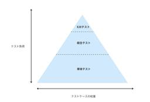
現場目線で、効率的な開発に向けたテスト戦略をまとめてみた
サーバーワークスエンジニアブログ
はじめに 想定読者 テストの前提知識 テストの視点：ブラックボックスとホワイトボックス テストの分類: 正常系, 準正常系, 異常系 テストの種類 テストダブル-MockとFake- テスト戦略 完璧なテストを目指さない 砂時計型のテストアーキテクチャを採用する レイヤードアーキテクチャを採用する レイヤードアーキテクチャのサンプル -カレーを作る- レイヤードアーキテクチャとテストアーキテクチャ テストの種類ごとの洗い出し方と実装のポイント 結合テストを明確にするのは難しい エラーハンドリングのテストは異常系とは限らない テスト設計書を作成するときのポイント テスト設計書サンプル まとめ は…
4日前
Amazon CloudWatchの新機能！生成AIによる運用調査機能を試してみた
サーバーワークスエンジニアブログ
Amazon CloudWatchの新しい調査機能で、AIがシステム異常の根本原因と推奨アクションを自然言語で提示。
4日前
IPv6なんて怖くない！Webサイトをデュアルスタック化してみよう。
サーバーワークスエンジニアブログ
はじめに 一般的な構成とは？ デュアルスタック化する為にはどこを変更すれば良い？ VPCにIPv6 CIDRを追加しよう！ サブネットにIPv6アドレスを追加しよう！ ALBのIPアドレスタイプの変更 IPv6のルーティング設定 最後に はじめに 皆様、IPv6は利用していますでしょうか？ プロバイダー側の対応は終わっていると思いますが、皆様のWebサイトの対応状況はいかがでしょうか。 AWSで一般的な構成でWebサイトを公開している場合は、簡単にデュアルスタック化できてしまいます。 これを機にIPv6の苦手意識をなくしましょう！ 一般的な構成とは？ 以下の図のような基本的なLB・EC2の構成…
4日前
AWS Summit 2025 で特別賞(6年連続 Top Engineer＆全冠)のトロフィーを頂きました
サーバーワークスエンジニアブログ
マネージドサービス部 佐竹です。AWS Summit Japan 2025 で特別賞表彰を頂きましたので感謝と共に頂いた記念品を紹介したいと思います。この度は特別賞を頂き、誠にありがとうございました。
4日前
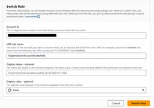
AWSの管理アカウントのIAM Identity Center経由で、メンバーアカウントのAmazon Managed Grafanaにログインする
サーバーワークスエンジニアブログ
はじめに こんにちは！三宅です！ 最近、データを可視化するために、Amazon Managed Grafana を初めて触りました！ コンソールから「ワークスペースを作成」ボタンを押し、設定を行おうとしたのですが、以下のようなエラーが発生しました。 ※ 認証方法に、IAM Identity Center を選択しました。 ユーザーがこのアプリケーションに対してマルチアカウントアクセスできるようにするには、AWS IAM Identity Center（AWS Single Sign-On の後継）でこのアプリケーションを有効にする必要があります。そのためには、以下の設定タスクを完了する必要があ…
5日前
【AWS re:Inforce 2025】現地参加レポート 1日目 6月16日(月) 佐竹版
サーバーワークスエンジニアブログ
マネージドサービス部 佐竹です。 AWS re:Inforce 2025 に現地参加してきましたので、そのレポートを日別に記載していきたいと思います。本ブログは1日目の総まとめとなっています。比較的"日記"の色合いが強い記事となっています。
5日前
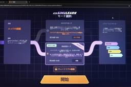
【AWS re:Inforce 2025】自己学習型のコンテンツ AWS SimuLearn で自由会話モードを楽しんだ話
サーバーワークスエンジニアブログ
マネージドサービス部 佐竹です。AWS re:Inforce 2025 に現地参加してきました。本ブログは自己学習型のコンテンツ AWS SimuLearn で自由会話モードを楽しんだ話です。このサービスは将来的に、トレーナーのロールプレイの負荷を大きく軽減してくれる可能性が高いと感じました。
6日前
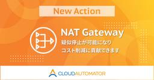
【Cloud Automator】コスト削減に貢献するNAT Gatewayを擬似的に起動/停止できるアクションを追加しました
サーバーワークスエンジニアブログ
NAT Gateway を擬似的に停止可能にする「VPC: NAT Gatewayを作成」アクションと「VPC: NAT Gatewayを削除」アクションが、Cloud Automatorに追加されました。 概要 これまでNAT Gatewayの利用料金を削減するためには、手動でNAT Gatewayの作成・削除を行う必要があり、時間と労力がかかっていました。 今回追加されたアクションを利用することで、NAT Gatewayの作成・削除をCloud Automatorで自動化することが可能となります。 Elastic IPアドレスの関連付けや、ルートテーブルへのデフォルトルートの追加なども自動…
6日前
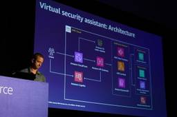
【AWS re:Inforce 2025】生成 AI が AWS のセキュリティサービスをどう進化させているか (TDR322)
サーバーワークスエンジニアブログ
マネージドサービス部 佐竹です。AWS re:Inforce 2025 に現地参加してきましたので、そのログを順番に記述しています。本ブログは TDR322 How AWS uses generative AI to advance native security services の解説です。
6日前
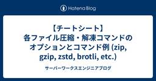
【チートシート】各ファイル圧縮・解凍コマンドのオプションとコマンド例 (zip, gzip, zstd, brotli, etc.)
サーバーワークスエンジニアブログ
はじめに zip、gzip、Bzip2、Snappy、Zstd、Brotli など、ファイル圧縮形式は多岐にわたります。 本記事では、これら主要な9種類のファイル圧縮コマンドの具体的な使用例をチートシート形式でまとめています。 各コマンドの詳細なオプションや使い方については、--help オプションやマニュアルも併せて参照してください。 このドキュメントは情報量が多いため、各セクションを折りたたんでいます。 ご覧になりたいコマンドのセクションをクリックして展開するなどしてご活用ください。 また、それぞれの圧縮形式の特徴や用途、そして選び方について知りたい方 は以下の記事もぜひご覧ください。 b…
7日前
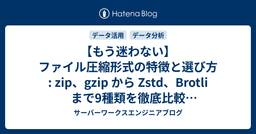
【もう迷わない】ファイル圧縮形式の特徴と選び方 : zip、gzip から Zstd、Brotli まで9種類を徹底比較【コマンドチートシート付】
サーバーワークスエンジニアブログ
はじめに zip、gzip、Bzip2、Snappy、Zstd、Brotli などなどなど... この世には数多のファイル圧縮形式が存在しますが、どれを使うべきか迷うことはありませんか？ それぞれどんな特徴があり、どんな場面で使うのが適しているのか。 そんな疑問に答えるため、ファイル圧縮形式の種類とそれぞれの特徴をまとめてみました。 コマンドチートシートは別記事にまとめました。 サクッとコマンドを確認したい方は、以下のリンクからご覧ください。 blog.serverworks.co.jp はじめに まずは簡単まとめ ファイル圧縮とは 可逆圧縮と非可逆圧縮 圧縮アルゴリズムとは 主要な圧縮形式の…
7日前

【小ネタ】Amazon Q Developer CLIの/editorでVS Codeを使う方法
サーバーワークスエンジニアブログ
こんにちは。 アプリケーションサービス部、DevOps担当の兼安です。 今回は小ネタです。 Amazon Q Developer CLIで/editorコマンドを実行すると、CLI上でエディタが起動し、エディタ上でプロンプトを編集することができます。 この時、起動するエディタをVS Codeにすると、より快適にプロンプトを編集することができるので、その方法をご紹介します。 なお、本記事の内容はOSがLinuxやmacOSであることを想定しています。 本記事のターゲット Amazon Q Developer CLIの/editorコマンドでVS Codeを使う設定 VS Code CLI のイン…
7日前
Amazon Q Developer CLI＋Dockerで、MCP Serverを利用してみよう
サーバーワークスエンジニアブログ
こんにちは。 アプリケーションサービス部、DevOps担当の兼安です。 今回はAmazon Q Developer CLI＋Dockerで、MCP Serverを利用する方法をご紹介します。 本記事のターゲット MCP Serverとは AWS MCP ServersとAmazon Q Developer CLIの設定 MCP ServerのDockerイメージのビルド Dockerイメージのビルド ビルドしたDockerイメージの確認 Amazon Q Developer CLIでMCP Serverを起動 本記事のターゲット 本記事はAmazon Q Developer CLIに少し慣れて…
7日前
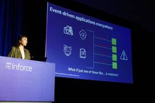
【AWS re:Inforce 2025】GuardDuty と Step Functions で作るマルウェア自動隔離 (COM222)
サーバーワークスエンジニアブログ
マネージドサービス部 佐竹です。AWS re:Inforce 2025 に現地参加してきましたので、そのログを順番に記述しています。本ブログは COM222 Serverless threat response for Amazon S3 malware detection の解説です。
7日前
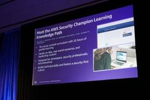
【AWS re:Inforce 2025】セキュリティ人材育成のための AWS Security Champion コース (SEC222)
サーバーワークスエンジニアブログ
マネージドサービス部 佐竹です。AWS re:Inforce 2025 に現地参加してきましたので、そのログを順番に記述しています。本ブログは SEC222 Upskill your team with the AWS Security Champion Learning Plan の解説です。
7日前
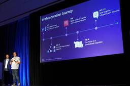
【AWS re:Inforce 2025】Wiz に学ぶ Cognito を活用した大規模な顧客 ID 基盤移行戦略 (IAM221)
サーバーワークスエンジニアブログ
マネージドサービス部 佐竹です。AWS re:Inforce 2025 に現地参加してきましたので、そのログを順番に記述しています。本ブログは IAM221 Secure and scalable customer IAM with Cognito: Wiz's success story の解説です。
7日前
Security Hub の新機能のプレビューを触ってみた
サーバーワークスエンジニアブログ
はじめに Security Hubになりたい山本です。 先日、強化されたSecurity Hubのプレビューが開始されました。本ブログでは、新機能について案内されているAWS blogの内容や追加された新機能の紹介と実際に触った感想をレポートします。 元記事： aws.amazon.com 前提 強化されたSecurity Hubが2025年6月17日からプレビュー期間となっております。 aws.amazon.com それに伴い既存のSecurity HubはSecurity Hub CSPMという名称になるようです。英語のSecurity Hub 紹介ページはすでにSecurity Hub …
7日前
Amazon Q Developer CLI: Proプランへの切り替えと確認方法
サーバーワークスエンジニアブログ
こんにちは！サーバーワークスで生成AIの活用推進を担当している針生と申します。 Amazon Q Developerのコマンドラインインターフェース（CLI）を使って、FreeプランからProプランへ切り替える手順と、その確認方法について解説します。 ログインとログアウト Step1: 現在のアカウントからログアウト Step2: Proプランが有効なアカウントで再ログイン Proプランが有効化されているか確認 方法1: 対話モードで /subscribe コマンドを使う 手順 方法2: 設定画面から確認する 手順 まとめ ログインとログアウト Step1: 現在のアカウントからログアウト ま…
7日前
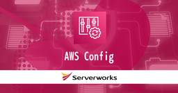
AWS Configを利用してAWSリソースの設定情報を(ほぼ)網羅的に取得する
サーバーワークスエンジニアブログ
こんにちは、久保です。 AWSを利用している場合、CloudFormationやTerraform, AWS CDKといったIaCツールを利用して構成管理されているケースも多いと思いますが、場合によってはAWSの実設定を参照し、設計などの想定した状態と乖離していないか？を確認したいこともあるかと思います。 この記事では、AWS Configを利用してAWSリソースの設定情報を網羅的に取得するシェルスクリプトをご紹介します。 概要 AWS Configがサポートしているリソース スクリプト 利用方法 前提条件 必要なツール AWS設定 使用方法 実行例 指定可能なパラメータ 出力ファイル ディレ…
7日前
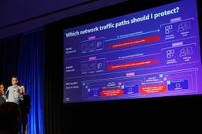
【AWS re:Inforce 2025】Meta 社が AWS Network Firewall を採用した理由 (NIS321)
サーバーワークスエンジニアブログ
マネージドサービス部 佐竹です。AWS re:Inforce 2025 に現地参加してきましたので、そのログを順番に記述しています。本ブログは NIS321 How Meta enabled secure egress patterns using AWS Network Firewall の解説です。
7日前

【ESP32入門】AWS IoT Core へ MQTT 接続しメッセージ送信してみた
サーバーワークスエンジニアブログ
はじめに 前回、以下の記事で開発環境を作成しました。 【ESP32入門】開発環境をセットアップしてLチカしてみた 今回は、AWS IoT Core を使って、ESP32 から送信されたメッセージを受信するところをやってみようと思います。 前提 Apple シリコン搭載の Mac で動作確認しています。 Python 3系が動作する前提で進めます。 開発環境のセットアップに関しては、前回の記事を参照してください。 ESP32 から AWS IoT Core へメッセージ送信する際に、 Wi-Fi を使うので、 SSID と パスワードが必要になります。 必要なもの 前回同様、以下のボードを使用し…
10日前
【ESP32入門】開発環境をセットアップしてLチカしてみた
サーバーワークスエンジニアブログ
はじめに 前提 必要なもの 開発環境のセットアップ Lチカしてみる ポート番号を調べる サンプルプロジェクトの実行 プログラムの削除 Lチカプログラムの中身確認 Main 関数(app_main) 環境変数の読み込み 詰まった点 バージョンによる差異 モジュールが存在しない idf.py コマンドが見つからない (command not found) まとめ はじめに IoT の案件をいくつか担当させていただいたことがありますが、開発時にセンサーからデータを取得する際はいつも擬似データを使っていました。 しかし、本当にやりたかったのは、物理的な世界とデータの橋渡しとなる「実機からのデータ収集」…
10日前
CodeBuild のリモート Docker サーバの挙動と料金を見てみる
サーバーワークスエンジニアブログ
こんにちは、末廣です。 「CodeBuild サンドボックスを使用したビルドのデバッグ」を試しながら「リモート Docker サーバ」の挙動を確認し、どういった開発をしている場合に使えそうか、料金面に着目して妄想してみました。 それではどうぞ。 関連アップデート Docker サーバの設定 ビルドプロジェクトの作成 ビルドプロジェクトの変更（6/13時点の検証結果 デバッグビルド サンドボックス環境の起動 コマンド叩いてみる ビルドする Docker サーバの力 料金と用途 Docker サーバの料金 比較して用途を考えてみる 料金バランスを考える 前提条件 Docker サーバを使わない料金…
10日前
Amazon Q Developer CLIのインストール方法と基本的な使い方
サーバーワークスエンジニアブログ
こんにちは！サーバーワークスで生成AIの活用推進を担当している針生と申します。 この記事では、Amazon Q Developer CLIのインストール方法と基本的な使い方を解説します。 Amazon Q Developer CLIとは？ Amazon Q Developer CLIは、ターミナル上でAmazon Qの機能を利用するためのコマンドラインインターフェースです。具体的には、以下のようなことが可能になります。 自然言語での対話: チャット形式でAWSに関する質問やコーディングの相談ができます。 AWS CLIコマンド生成: 「S3バケットを作って」といった自然言語の指示から、対応する…
10日前
SES のメール送信テンプレートを使用してみる
サーバーワークスエンジニアブログ
こんにちは😸 カスタマーサクセス部の山本です。 SES のメール送信テンプレート 送信テンプレートを試してみる 準備 まずは以前からある「ストアドテンプレート」を試す 日本語 作業実施時の注意点 「置換タグ」に指定する内容を誤った際の通知（レンダリング失敗イベントの通知） 確認 2024 年 11 月 4 日に出た「インラインテンプレート」機能を試してみる AWS SESのメール送信テンプレート機能まとめ 概要 テンプレートの種類と特徴 1. ストアドテンプレート（従来の方式） 2. インラインテンプレート（新機能） テンプレートの主な構成要素 エラー処理 余談 SES のメール送信テンプレー…
10日前